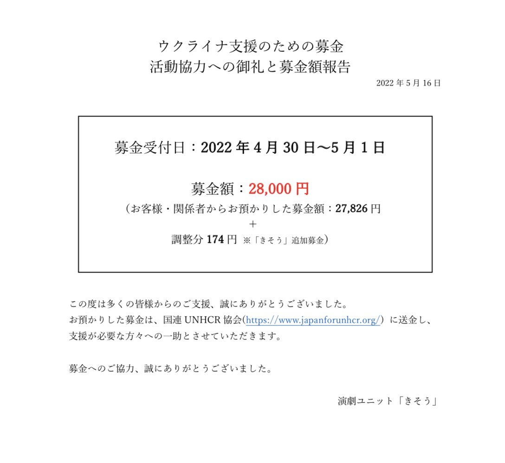
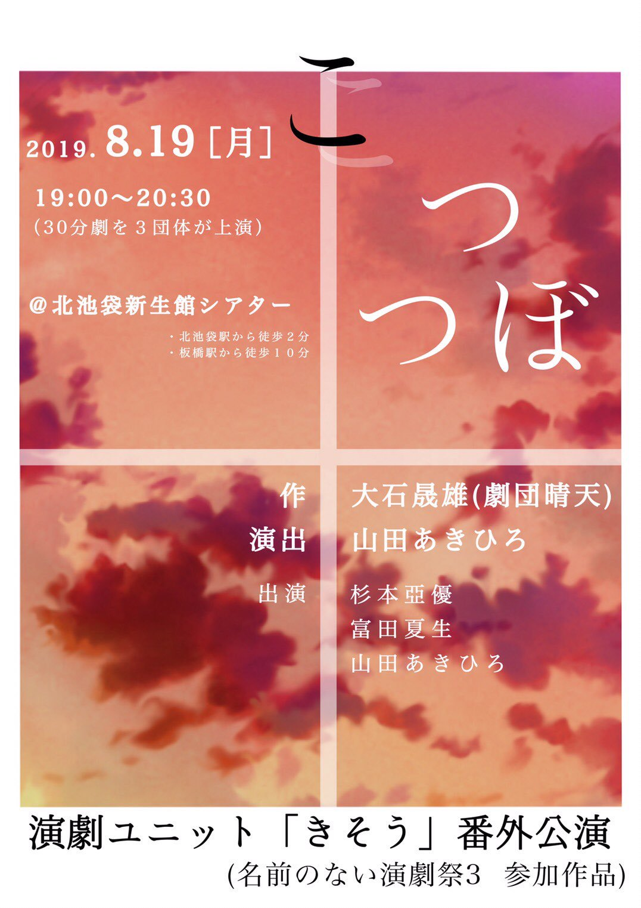

2022年
4月30日（土）/ 5月1日（日）
熊谷文化創造館さくらめいと
月のホール
演劇ユニット「きそう」第４回公演
『エゴ・サーチ』
作：鴻上尚史
演出：山田あきひろ
全公演終了いたしました。
ご来場・ご検討いただき誠にありがとうございました。

売れない新人小説家、一色健治。
ある日、ネット上で
自分と同姓同名・同じプロフィールを持つ
「誰か」のブログを見つける。
「誰か」に振り回されながら
書き続ける小説。
そこには沖縄を訪れた女性と、
沖縄の精霊・キジムナーの姿があった。
Ego(自己)Search(探索)に翻弄される
人々の物語。
本公演における感染症対策につきまして
- (2022年5月16日現在)
- 終演から2週間が経過しましたが、キャスト・スタッフ共に感染者の報告はなく、無事に公演終了を迎えることができました。
- ご予約・ご来場時の感染症対策へのご協力、誠にありがとうございました。
- ※お預かりした緊急連絡先は責任を持って破棄させていただきます
本公演における募金活動につきまして
キャスト
渡 柚珠
予備でんち
木越綾香
涼
富田夏生
山田あきひろ
藤紫その
溝口仁也(劇団夢十字星)
達川和哉
荒見シャケ
たは＂たゆういち
スタッフ
舞台監督:後藤亮
アドバイザー:たは＂たゆういち
音響:石川美緒
音響機材協力:大澤伸彦
照明:文月
映像操作:内山あすか
衣装製作:モリチガ
フライヤー:荒見シャケ
制作:豊崎舞香
更新情報
- 2022年6月4日
- 第４回公演『エゴ・サーチ』の情報を更新しました！！
- 2022年2月4日
- 第４回公演『エゴ・サーチ』の情報を更新しました！！
- 2022年1月11日
- 番外公演『理想と現実の交錯』の情報を更新しました！！
- 2020年2月25日
- 第3回公演の情報を更新しました！！
- 2019年11月28日
- 第3回公演『凄六』・『占い師のお仕事』のチケット予約開始＆チラシ公開！
- 2019年11月25日
- 「過去の公演」でチラシが見られるようになりました！
- 2019年11月21日
- 番外公演『こつつぼ』の情報を更新しました。
ごあいさつ
「熊谷で芝居集団、作っちゃいます？」
こんな会話から生まれた演劇ユニット。
埼玉県熊谷市を中心に活動する演劇ユニット、
「きそう」
熊谷市在住のメンバーから、
埼玉県南部、群馬県、栃木県、
東京都在住のメンバーまで。
起草段階から作っていく意味での「きそう」
奇想天外なアイデアが飛び出す「きそう」
既作と創作、どちらも行う「きそう」
はたまた、お客さんが「きそう」な演劇集団
それが、演劇ユニット「きそう」
Twitterを見る
上演記録
- 2017年 秋
- 演劇ユニット「きそう」活動開始
- 2017年10月14日
- 公式Twitter開設
- 2018年2月11・12日
- 旗揚げ公演『ロングタイム・アゴー』『ここだけの話』@LIVE SPACE CASA TAJI
- 2018年12月15・16日
- 第2回公演『イントレランスの祭』@熊谷市立市民ホール
- 2019年8月19日
- 番外公演『こつつぼ』@北池袋新生館シアター
- 2020年1月25・26日
- 第3回公演『凄六』『占い師のお仕事』@熊谷市立市民ホール
- 2021年3月23・27・28日
- 番外公演『理想と現実の交錯』@北池袋新生館シアター
- 2022年4月30日・5月1日
- 第4回公演『エゴ・サーチ』@熊谷文化創造館さくらめいと 月のホール

番外公演

第3回公演

番外公演

第２回公演